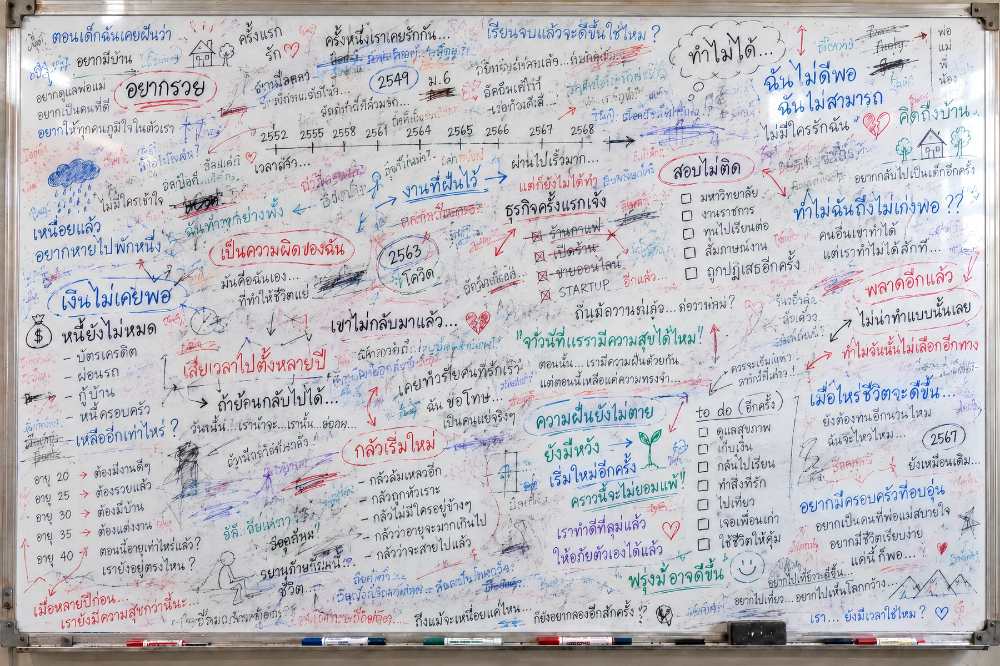
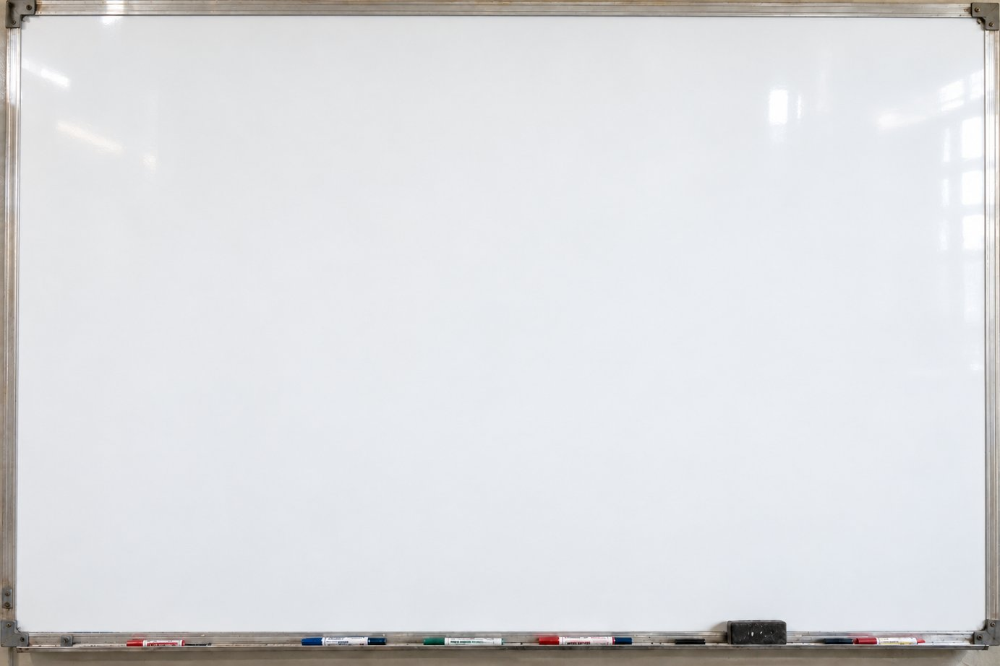

แนะนำการศึกษา · INTRODUCTION
เปิดมุมมองใหม่ ต่อชีวิต ความสัมพันธ์ และผลลัพธ์ที่คุณต้องการ
บิน พนาสันต์
CHOOSE ONE QUESTION FOR YOUR LIFE
01
ด้านไหนในชีวิต ที่อยากยกระดับ ให้ดีขึ้น
02
ด้านไหนในชีวิต ที่อยากได้ผลลัพธ์ ทะลุทะลวง
03
ด้านไหนในชีวิต ที่ต้องทน และไม่อยากทนอยู่ตรงนี้แล้ว
ลองดูวงกลมนี้ · ALL WE KNOW
1
2
ไม่รู้ว่าไม่รู้
จุดบอด
BLIND SPOTS
1
ความรู้และทักษะ ที่เราใช้อยู่ทุกวัน
2
สิ่งที่เรารู้ตัวว่ายังขาด และเลือกไปเรียนเพิ่มได้
3
สิ่งที่เรามองไม่เห็นเลย ว่ามันมีอยู่
พื้นที่ที่ใหญ่ที่สุด และเป็นพื้นที่ที่ Landmark Forum ทำงานด้วย
อดีต
PAST
ถูกเปรียบเทียบ กับคนอื่นตั้งแต่เด็ก
ปัจจุบัน
PRESENT
“ฉันไม่ดีพอ”
อนาคต
ที่คาดการณ์ได้
ไม่กล้าพูด ไม่กล้าขอ
วนซ้ำแบบเดิม
เหตุการณ์จบแล้ว แต่ความเชื่อยังติดมา — ถ้าไม่มีอะไรเปลี่ยน อนาคตก็คืออดีตซ้ำเดิม

อดีต
เหตุการณ์
ปัจจุบัน
ความเชื่อที่ติดมา
ถูกเปรียบเทียบ กับคนอื่นตั้งแต่เด็ก
“ฉันไม่ดีพอ”
ธุรกิจแรกเจ๊ง
“กลัวการเริ่มใหม่”
ความรักครั้งก่อน จบไม่ดี
“ไม่มีใครรักฉันจริง”
ทนทำงานที่ไม่ชอบ หลายปี
“เสียเวลาไป ตั้งหลายปี”

ถ้าวันนี้ คุณมีกระดานโล่งๆ
คุณจะสร้างอะไร?
อะไรเป็นไปได้บ้าง เช่น
การงาน
เสนอไอเดีย และได้รับโอกาสใหม่
การเงิน
ขอขึ้นเงินเดือน ตามคุณค่าที่สร้าง
ความรัก
บอกตรงๆ ว่าต้องการอะไร และคุยกันได้จริง
ที่ Landmark Forum คุณจะได้เขียนกระดานใหม่ ด้วยตัวเอง
ผู้เข้าร่วม · WHO JOINS
อยากเก่งขึ้นอีกขั้น
เช่น เปลี่ยนงาน แต่งงาน
กำลังหาทิศทางใหม่
อยากเห็นมุมมองเชิงลึก
Landmark ไม่ได้มีไว้ซ่อมแซมหรือแก้ปมใคร — ปมที่คลี่คลายลง เป็นเพียงผลพลอยได้
THE TOP 5 BENEFITS
1
ประสิทธิภาพในความสัมพันธ์
Effectiveness in Relationships
2
ประสิทธิผลส่วนบุคคล
Personal Productivity
3
ความมั่นใจ
Confidence
4
ส่งผลต่อผู้อื่น ให้พลัง และสร้างความแตกต่าง
Impacting Others, Empowering Others and Making a Difference
5
ความสุข ความสงบในใจ
Happiness, Peace of Mind
รอบเรียน · SCHEDULE 2569
| วันที่ | รูปแบบ | หมายเหตุ |
|---|---|---|
| 6, 7, 8 และ 10 พ.ย. 2569 | ในสถานที่ · กรุงเทพฯ | ที่นั่งจำกัด |
| 27, 28, 29 พ.ย. และ 1 ธ.ค. 2569 | ออนไลน์ · Zoom | ที่นั่งจำกัด |
| 11, 12, 13 และ 15 ธ.ค. 2569 | ในสถานที่ · กรุงเทพฯ | |
| 18, 19, 20 และ 22 ธ.ค. 2569 | ออนไลน์ · Zoom |
ออนไลน์ (Zoom)
20,900 บาท
ในสถานที่ (กรุงเทพฯ)
22,600 บาท
จองที่นั่งได้ด้วยเงินขั้นต่ำ 3,000 บาท
ข้อมูล ณ 15/10/69 · รอบและราคาอาจเปลี่ยนแปลง กรุณาตรวจสอบกับผู้แนะนำก่อนลงทะเบียน